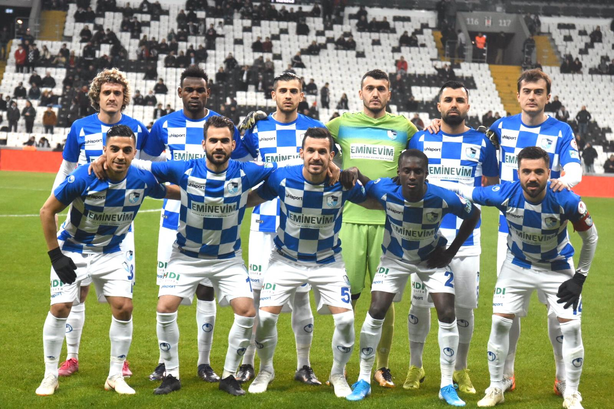

28 Aralık 1967 günü Hilmi Nalbantoğlu başkanlığında bir araya gelen Avni Özden, Mehmet Kemal Özgör, Muhittin Ketecioğlu, Zekai Önalan, Türker Dalkılıç, Muammer Özkavcı, Zühtü Akbaba, İrfan Çelik ve İrfan Pasin, "Erzurumspor" adı altında profesyonel bir takımın oluşumunu başlatmak üzere teşebbüse geçtiler. 29 Ocak 1968 tarihinde Erzurumspor Kulübünün kuruluşu notere tasdik ettirildi. Profesyonel Futbol Şubesini kurmak için Raci Karakaş ve Sadi Göncüoğlu da bu oluşuma katıldılar.
Erzurumspor'u kuran mütevelli heyeti ildeki amatör spor kulüpleri ile temasa geçerek, birkaç kulübün birleşip "Erzurumspor" adı altında faaliyetlerini sürdürmelerini teklif etti. Ancak, bu teklife sadece Aziziye Gençlik Spor Kulübü olumlu yanıt verdi. Ve kulübün adı 11 Şubat 1968 tarihinde yapılan genel kurul toplantısı ile "Erzurumspor" olarak değiştirildi.
Erzurumspor, Dernekler İl Müdürlüğü'nün mahkemeye yaptığı başvuru üzerine 4721 sayılı Türk Medeni Kanununun 87. maddesi uyarınca iki kez üst üste olağan genel kurul toplantısını yapmadığı gerekçe gösterilerek Erzurum Birinci Sulh Hukuk Mahkemesi kararıyla 9 Haziran 2015 tarihinde kapatılmıştır.
Büyükşehir Belediye Erzurumspor, 2005 yılında kurulan spor kulübüdür. 1967 yılında "Gençler Birliği Gençlik Spor Kulübü" adıyla kurulan kulüp, daha sonra "3 Temmuz Belde Spor Gençlik Kulübü" adını almıştır. 2005 yılında ise Erzurum Büyükşehir Belediyesi çatısı altına faaliyetlerini sürdürmeye başlayıp "Erzurum Büyükşehir Belediyespor" adını almıştır.
2019-20 sezonunda 1. Lig'i ikinci sırada tamamlayarak tekrar Süper Lig'e yükselmiştir. Türkiye Kupasında ise sırasıyla Edirnespor, Bodrumspor, Bursaspor ve Beşiktaş'ı eleyerek ilk kez çeyrek finale çıktı. Çeyrek finalde ise Trabzonspor'a elendi.
